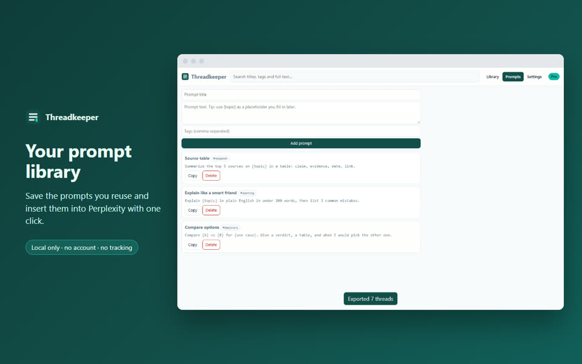

How to save and reuse your best Perplexity prompts
If you type the same kind of question into Perplexity every week, such as a competitor check, a product comparison or a news summary, save the wording once and reuse it.
Set up a prompt library
- Install Threadkeeper (free).
- Open the Threadkeeper library and go to the Prompts tab.
- Give the prompt a title, paste the text, and click Add prompt. Use a placeholder such as
{topic}for the part that changes. - On perplexity.ai, open the Threadkeeper button and insert the prompt into the question box in one click.

Five prompts worth saving
- Compare: "Compare {option A} and {option B} for {use}. Give a table of price, strengths and weaknesses, and cite sources from the last 12 months."
- Catch up: "What changed about {topic} in the last 30 days? Bullet points with dates and sources."
- Explain: "Explain {topic} to a smart beginner in 5 short paragraphs, then list 3 common mistakes."
- Check a claim: "Is this true: {claim}? Show the strongest evidence for and against, with sources."
- Plan: "Give me a step-by-step plan to {goal} in {time}, with the first step I can do today."
Add Threadkeeper to Chrome, free
FAQ
Are my prompts private?
Yes. Saved prompts live only in your browser's local storage and are included in your Threadkeeper backup file.
Is the prompt library free?
Yes. Prompts, folders, tags, search and single-thread export are all free.